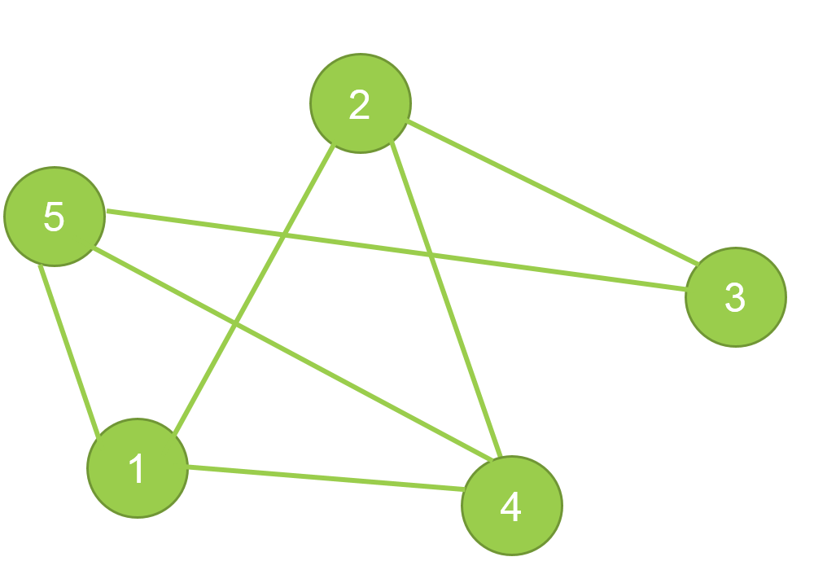

- unde ω (i, j) reprezinta costul arcului (i, j). Datorita orientarii, asa cum am mai spus, arcul (i, j) nu este acelasi lucru cu (j, i). Prin urmare A[i][j] ≠ A[j][i], iar matricea este asimetrica fata de diagonala principala.
| 1 | 2 | 3 | 4 | 5 | |
| 1 | ∞ | 8 | 11 | 15 | 4 |
| 2 | ∞ | ∞ | 3 | 9 | 1 |
| 3 | ∞ | ∞ | ∞ | 2 | ∞ |
| 4 | ∞ | ∞ | ∞ | ∞ | 6 |
| 5 | ∞ | ∞ | 2 | ∞ | ∞ |
| 1 | 2 | 3 | 4 | 5 | |
| 1 | 0 | 1 | 0 | 1 | 1 |
| 2 | 1 | 0 | 1 | 1 | 0 |
| 3 | 0 | 1 | 0 | 0 | 1 |
| 4 | 1 | 1 | 0 | 0 | 1 |
| 5 | 1 | 0 | 1 | 1 | 0 |
